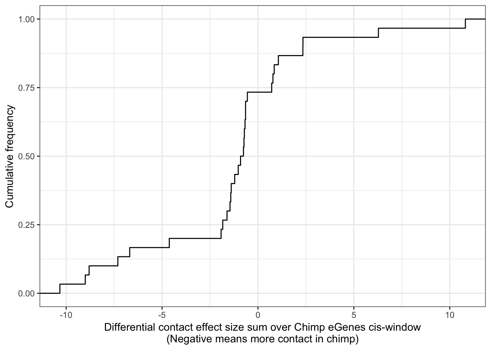
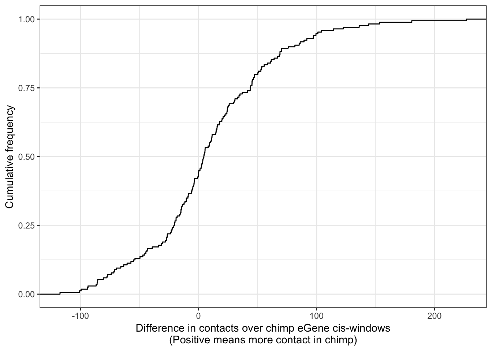
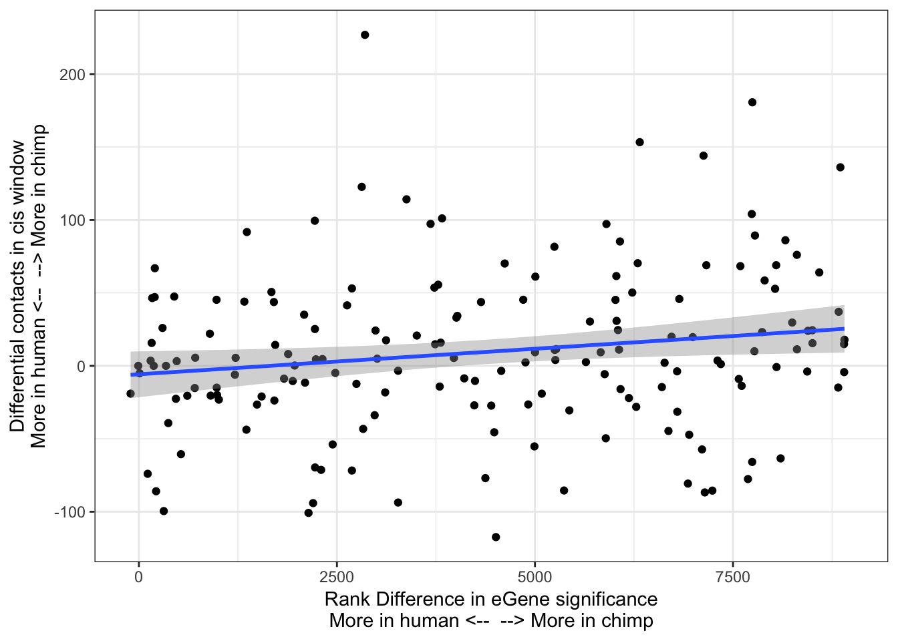
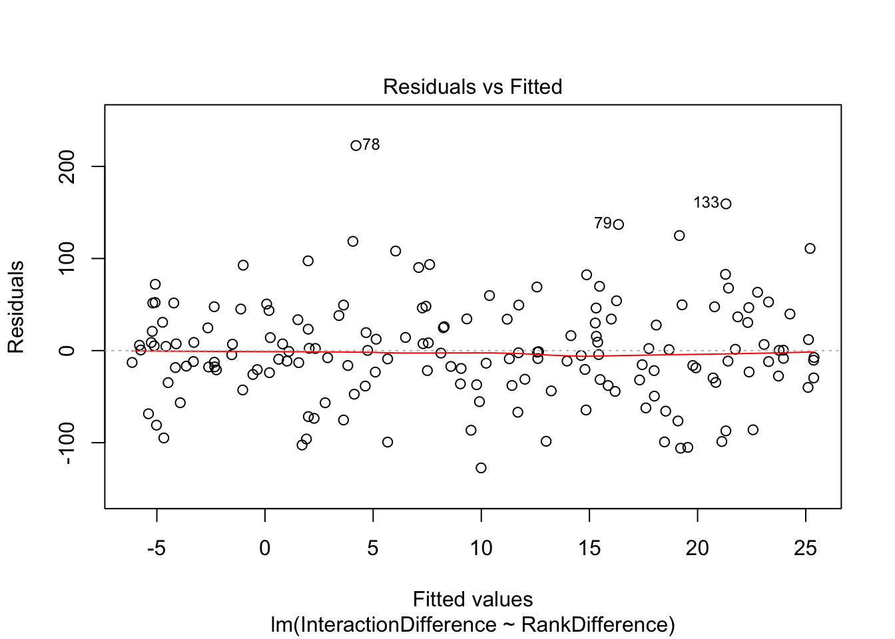
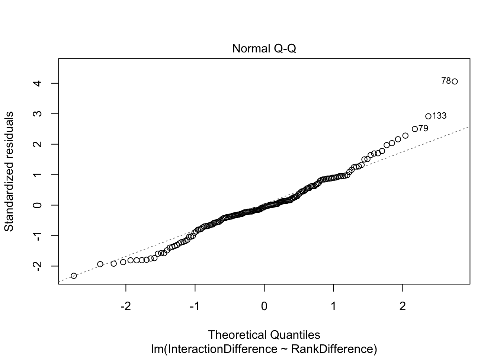
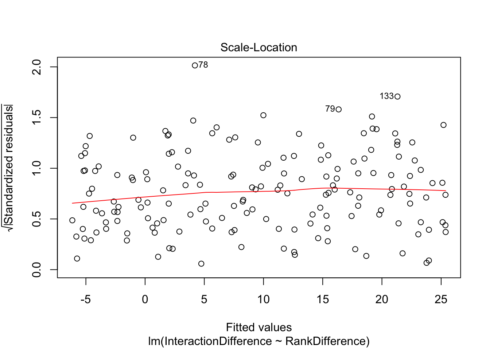
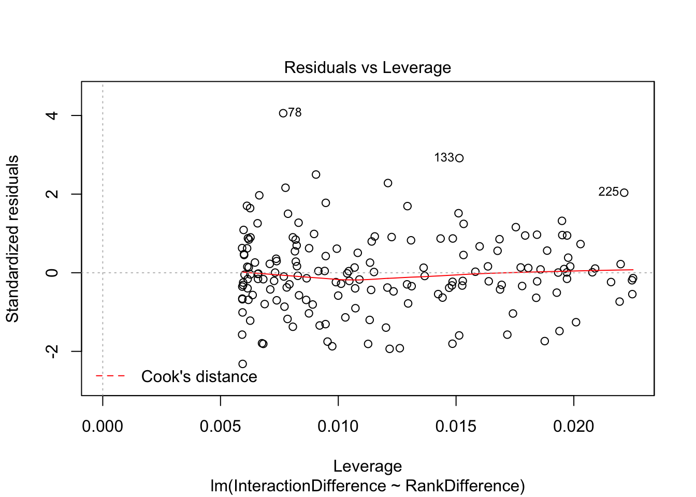
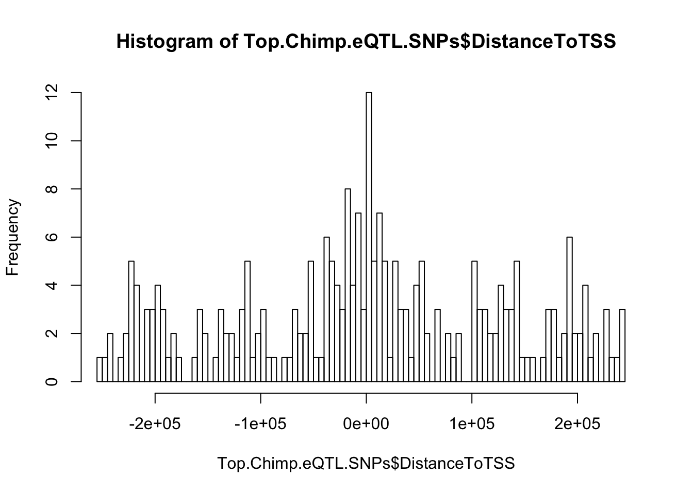
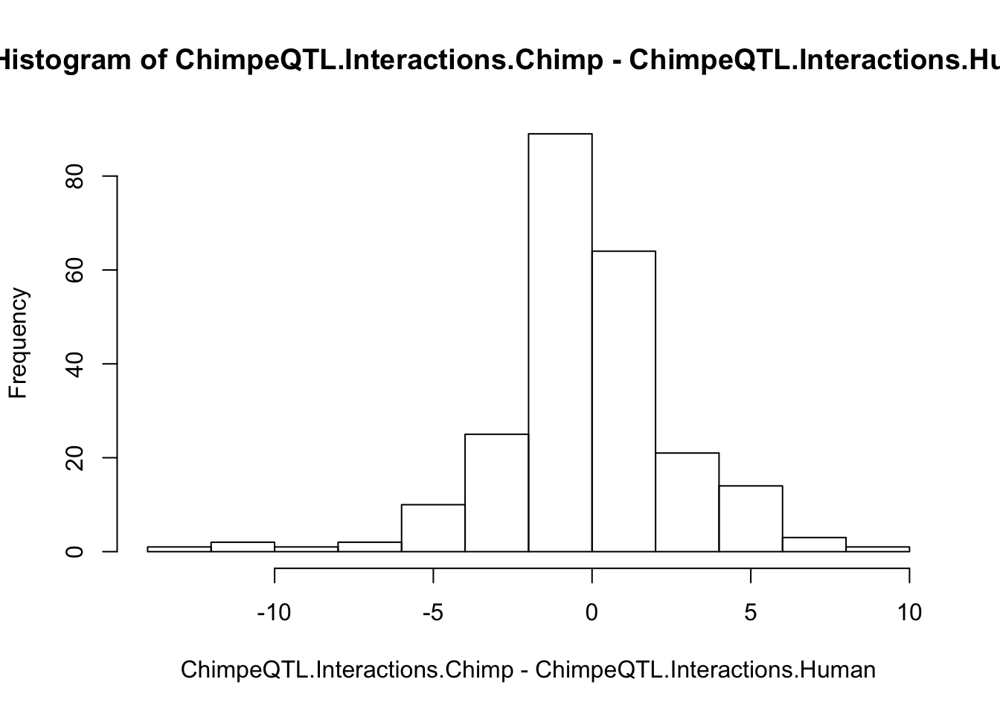

Last updated: 2019-08-06
Checks: 6 1
Knit directory: Comparative_eQTL/analysis/
This reproducible R Markdown analysis was created with workflowr (version 1.4.0). The Checks tab describes the reproducibility checks that were applied when the results were created. The Past versions tab lists the development history.
The R Markdown file has unstaged changes. To know which version of the R Markdown file created these results, you’ll want to first commit it to the Git repo. If you’re still working on the analysis, you can ignore this warning. When you’re finished, you can run wflow_publish to commit the R Markdown file and build the HTML.
Great job! The global environment was empty. Objects defined in the global environment can affect the analysis in your R Markdown file in unknown ways. For reproduciblity it’s best to always run the code in an empty environment.
The command set.seed(20190319) was run prior to running the code in the R Markdown file. Setting a seed ensures that any results that rely on randomness, e.g. subsampling or permutations, are reproducible.
Great job! Recording the operating system, R version, and package versions is critical for reproducibility.
Nice! There were no cached chunks for this analysis, so you can be confident that you successfully produced the results during this run.
Great job! Using relative paths to the files within your workflowr project makes it easier to run your code on other machines.
Great! You are using Git for version control. Tracking code development and connecting the code version to the results is critical for reproducibility. The version displayed above was the version of the Git repository at the time these results were generated.
Note that you need to be careful to ensure that all relevant files for the analysis have been committed to Git prior to generating the results (you can use wflow_publish or wflow_git_commit). workflowr only checks the R Markdown file, but you know if there are other scripts or data files that it depends on. Below is the status of the Git repository when the results were generated:
Ignored files:
Ignored: .DS_Store
Ignored: .Rhistory
Ignored: .Rproj.user/
Ignored: analysis/.DS_Store
Ignored: analysis/20190521_eQTL_CrossSpeciesEnrichment_cache/
Ignored: analysis/figure/
Ignored: analysis_temp/.DS_Store
Ignored: code/.DS_Store
Ignored: code/snakemake_workflow/.DS_Store
Ignored: code/snakemake_workflow/rules/.eQTL_analysis.smk.swp
Ignored: data/.DS_Store
Ignored: data/PastAnalysesDataToKeep/.DS_Store
Ignored: docs/.DS_Store
Ignored: docs/assets/.DS_Store
Unstaged changes:
Modified: analysis/20190521_eQTL_CrossSpeciesEnrichment.Rmd
Modified: analysis/20190627_DiffContactsEgenes.Rmd
Modified: analysis/20190708_DiffContactsEgenes_CisWindowControlled.Rmd
Modified: analysis/20190716_VarianceInsteadOfEgenes.Rmd
Modified: analysis/index.Rmd
Modified: code/snakemake_workflow/Session.vim
Modified: code/snakemake_workflow/rules/eQTL_analysis.smk
Note that any generated files, e.g. HTML, png, CSS, etc., are not included in this status report because it is ok for generated content to have uncommitted changes.
These are the previous versions of the R Markdown and HTML files. If you’ve configured a remote Git repository (see ?wflow_git_remote), click on the hyperlinks in the table below to view them.
| File | Version | Author | Date | Message |
|---|---|---|---|---|
| Rmd | 34e6b4f | Benjmain Fair | 2019-07-11 | update site |
| html | 34e6b4f | Benjmain Fair | 2019-07-11 | update site |
library(tidyverse)
library(knitr)
library("edgeR")
library(corrplot)
library(gplots)
library(pROC)
library(qvalue)
library(reshape2)
library(gridExtra)As an initial pass at testing the hypothesis that Chimp-specific cis-eGenes have more DNA contacts at those cis-windows than humans in those same cis-windows, I looked at chimp/human differential contact windows from Eres et al and intersected in with my list of Chimp eGene locations (+/- 100kb). Then I looked at the sum of effect sizes within each of those windows.
DataIn <- read.table("../data/DCContactsInEgenes.bed", col.names = c("chr", "start", "stop", "gene", "blank", "strand", "chrContact", "startContact", "beta", "nameContact", "beta", "strandContact"), sep='\t', row.names = NULL)
GroupedData <- DataIn %>%
group_by(stop) %>%
summarise(BetaSum = sum(beta))
ggplot(GroupedData, aes(x=BetaSum)) +
stat_ecdf(geom = "step") +
xlab("Differential contact effect size sum over Chimp eGenes cis-window\n(Negative means more contact in chimp)") +
ylab("Cumulative frequency") +
theme_bw()
| Version | Author | Date |
|---|---|---|
| 34e6b4f | Benjmain Fair | 2019-07-11 |
wilcox.test(GroupedData$BetaSum, mu = 0, alternative = "less")
Wilcoxon signed rank test
data: GroupedData$BetaSum
V = 135, p-value = 0.02245
alternative hypothesis: true location is less than 0Ok it seems there is a subtle but significant shift in that chimp eGenes have more differential contacts a way that slightly favors high connectivity in chimps.
To explore this more carefully, Ittai gave me a list of Homer-normalized contact data (not just significant differential contacts and effect sizes) for all his 8 samples (4 human, 4 chimp) for the cis-window surrounding each eGene (+/- 250kb).
From this I can estimate connectivity within a cis window as the sum of all Homer normalized contact scores within a species. Then I will look at the difference between that sum between species, and ask if it is correlated with some species measure of eGene character.
First, read in Ittai’s Homer normalized contact data for each individual in both chimp and human…
SampleA<- read.csv(gzfile("../data/IttaiHomerInteractionScoresInCisWindows/adj_bins_25_A-21792_10kb_norm.gz"), sep='\t')
SampleB<- read.csv(gzfile("../data/IttaiHomerInteractionScoresInCisWindows/adj_bins_25_B-28126_10kb_norm.gz"), sep='\t')
SampleC<- read.csv(gzfile("../data/IttaiHomerInteractionScoresInCisWindows/adj_bins_25_C-3649_10kb_norm.gz"), sep='\t')
SampleD<- read.csv(gzfile("../data/IttaiHomerInteractionScoresInCisWindows/adj_bins_25_D-40300_10kb_norm.gz"), sep='\t')
SampleE<- read.csv(gzfile("../data/IttaiHomerInteractionScoresInCisWindows/adj_bins_25_E-28815_10kb_norm.gz"), sep='\t')
SampleF<- read.csv(gzfile("../data/IttaiHomerInteractionScoresInCisWindows/adj_bins_25_F-28834_10kb_norm.gz"), sep='\t')
SampleG<- read.csv(gzfile("../data/IttaiHomerInteractionScoresInCisWindows/adj_bins_25_G-3624_10kb_norm.gz"), sep='\t')
SampleH<- read.csv(gzfile("../data/IttaiHomerInteractionScoresInCisWindows/adj_bins_25_H-3651_10kb_norm.gz"), sep='\t')
ChimpInteractionSums <- SampleC + SampleD + SampleG + SampleH
HumanInteractionSums <- SampleA + SampleB + SampleE + SampleF
HumanInteractions <- data.frame(H.Score = rowSums(cbind(SampleA, SampleB, SampleE, SampleF))) %>%
rownames_to_column() %>%
mutate(HumanID = gsub("(.+?)\\..+?", "\\1", rowname, perl=T))
ChimpInteractions <- data.frame(C.Score = rowSums(cbind(SampleC, SampleD, SampleG, SampleH))) %>%
rownames_to_column("ChimpID")Ok now read in eQTL data…
eQTLs <- read.table(gzfile("../data/PastAnalysesDataToKeep/20190521_eQTLs_250kB_10MAF.txt.gz"), header=T)
# List of chimp tested genes
ChimpTestedGenes <- rownames(read.table('../output/ExpressionMatrix.un-normalized.txt.gz', header=T, check.names=FALSE, row.names = 1))
ChimpToHumanGeneMap <- read.table("../data/Biomart_export.Hsap.Ptro.orthologs.txt.gz", header=T, sep='\t', stringsAsFactors = F)
kable(head(ChimpToHumanGeneMap))| Gene.stable.ID | Transcript.stable.ID | Chimpanzee.gene.stable.ID | Chimpanzee.gene.name | Chimpanzee.protein.or.transcript.stable.ID | Chimpanzee.homology.type | X.id..target.Chimpanzee.gene.identical.to.query.gene | X.id..query.gene.identical.to.target.Chimpanzee.gene | dN.with.Chimpanzee | dS.with.Chimpanzee | Chimpanzee.orthology.confidence..0.low..1.high. |
|---|---|---|---|---|---|---|---|---|---|---|
| ENSG00000198888 | ENST00000361390 | ENSPTRG00000042641 | MT-ND1 | ENSPTRP00000061407 | ortholog_one2one | 94.6541 | 94.6541 | 0.0267 | 0.5455 | 1 |
| ENSG00000198763 | ENST00000361453 | ENSPTRG00000042626 | MT-ND2 | ENSPTRP00000061406 | ortholog_one2one | 96.2536 | 96.2536 | 0.0185 | 0.7225 | 1 |
| ENSG00000210127 | ENST00000387392 | ENSPTRG00000042642 | MT-TA | ENSPTRT00000076396 | ortholog_one2one | 100.0000 | 100.0000 | NA | NA | NA |
| ENSG00000198804 | ENST00000361624 | ENSPTRG00000042657 | MT-CO1 | ENSPTRP00000061408 | ortholog_one2one | 98.8304 | 98.8304 | 0.0065 | 0.5486 | 1 |
| ENSG00000198712 | ENST00000361739 | ENSPTRG00000042660 | MT-CO2 | ENSPTRP00000061402 | ortholog_one2one | 97.7974 | 97.7974 | 0.0106 | 0.5943 | 1 |
| ENSG00000228253 | ENST00000361851 | ENSPTRG00000042653 | MT-ATP8 | ENSPTRP00000061400 | ortholog_one2one | 94.1176 | 94.1176 | 0.0325 | 0.3331 | 1 |
# Of this ortholog list, how many genes are one2one
table(ChimpToHumanGeneMap$Chimpanzee.homology.type)
ortholog_many2many ortholog_one2many ortholog_one2one
2278 19917 140351 OneToOneMap <- ChimpToHumanGeneMap %>%
filter(Chimpanzee.homology.type=="ortholog_one2one")
# Read gtex heart egene list
# Only consider those that were tested in both species and are one2one orthologs
GtexHeartEgenes <- read.table("../data/Heart_Left_Ventricle.v7.egenes.txt.gz", header=T, sep='\t', stringsAsFactors = F) %>%
mutate(gene_id_stable = gsub(".\\d+$","",gene_id)) %>%
filter(gene_id_stable %in% OneToOneMap$Gene.stable.ID) %>%
mutate(chimp_id = plyr::mapvalues(gene_id_stable, OneToOneMap$Gene.stable.ID, OneToOneMap$Chimpanzee.gene.stable.ID, warn_missing = F)) %>%
filter(chimp_id %in% ChimpTestedGenes)
ChimpToHuman.ID <- function(Chimp.ID){
#function to convert chimp ensembl to human ensembl gene ids
return(
plyr::mapvalues(Chimp.ID, OneToOneMap$Chimpanzee.gene.stable.ID, OneToOneMap$Gene.stable.ID, warn_missing = F)
)}First question: do the ~300 chimp eGenes have more contacts in their cis-window in chimp
Chimp_OrderedGenes <- eQTLs %>%
group_by(gene) %>%
dplyr::slice(which.min(qvalue)) %>%
filter(gene %in% GtexHeartEgenes$chimp_id) %>%
left_join(GtexHeartEgenes, by=c("gene"="chimp_id")) %>%
dplyr::select(gene, qvalue, qval) %>% as.data.frame() %>%
mutate(ChimpRank = dense_rank(qvalue)) %>%
mutate(HumanRank = dense_rank(qval)) %>%
mutate(RankDifference = HumanRank-ChimpRank) %>%
filter(qvalue <0.1) %>%
mutate(HumanID=ChimpToHuman.ID(gene))
# OneToOneMap %>%
# inner_join(HumanInteractions, by=c("Gene.stable.ID"="HumanId")) %>% dim()
# inner_join(ChimpInteractions, by=c("Chimpanzee.gene.stable.ID"="ChimpID")) %>% dim()
# right_join(Chimp_OrderedGenes, by=c("Chimpanzee.gene.stable.ID"="gene")) %>% dim()
Chimp_OrderedGenes.WithContactInfo <- Chimp_OrderedGenes %>%
left_join(HumanInteractions, by=c("HumanID")) %>%
left_join(ChimpInteractions, by=c("gene"="ChimpID")) %>%
mutate(InteractionDifference=H.Score - C.Score)
ggplot(Chimp_OrderedGenes.WithContactInfo, aes(x=InteractionDifference)) +
stat_ecdf(geom = "step") +
xlab("Difference in contacts over chimp eGene cis-windows\n(Positive means more contact in chimp)") +
ylab("Cumulative frequency") +
theme_bw()
| Version | Author | Date |
|---|---|---|
| 34e6b4f | Benjmain Fair | 2019-07-11 |
ggplot(Chimp_OrderedGenes.WithContactInfo, aes(x=RankDifference, y=InteractionDifference)) +
geom_point() +
theme_bw() +
xlab("Rank Difference in eGene significance\nMore in human <-- --> More in chimp") +
ylab("Differential contacts in cis window\nMore in human <-- --> More in chimp") +
geom_smooth(method='lm',formula=y~x)
| Version | Author | Date |
|---|---|---|
| 34e6b4f | Benjmain Fair | 2019-07-11 |
cor.test(x=Chimp_OrderedGenes.WithContactInfo$RankDifference, y=Chimp_OrderedGenes.WithContactInfo$InteractionDifference, method="spearman")
Spearman's rank correlation rho
data: Chimp_OrderedGenes.WithContactInfo$RankDifference and Chimp_OrderedGenes.WithContactInfo$InteractionDifference
S = 656450, p-value = 0.01665
alternative hypothesis: true rho is not equal to 0
sample estimates:
rho
0.1839659 contacts.v.eGene.lm = lm(InteractionDifference ~ RankDifference, data=Chimp_OrderedGenes.WithContactInfo)
summary(contacts.v.eGene.lm)
Call:
lm(formula = InteractionDifference ~ RankDifference, data = Chimp_OrderedGenes.WithContactInfo)
Residuals:
Min 1Q Median 3Q Max
-127.372 -29.715 -2.727 33.539 222.680
Coefficients:
Estimate Std. Error t value Pr(>|t|)
(Intercept) -5.776579 7.953704 -0.726 0.4687
RankDifference 0.003498 0.001552 2.253 0.0255 *
---
Signif. codes: 0 '***' 0.001 '**' 0.01 '*' 0.05 '.' 0.1 ' ' 1
Residual standard error: 55.08 on 167 degrees of freedom
(111 observations deleted due to missingness)
Multiple R-squared: 0.02951, Adjusted R-squared: 0.0237
F-statistic: 5.078 on 1 and 167 DF, p-value: 0.02553plot(contacts.v.eGene.lm)
| Version | Author | Date |
|---|---|---|
| 34e6b4f | Benjmain Fair | 2019-07-11 |

| Version | Author | Date |
|---|---|---|
| 34e6b4f | Benjmain Fair | 2019-07-11 |

| Version | Author | Date |
|---|---|---|
| 34e6b4f | Benjmain Fair | 2019-07-11 |

| Version | Author | Date |
|---|---|---|
| 34e6b4f | Benjmain Fair | 2019-07-11 |
Ok yes, there is a slight correlation between chimp eGene character, and contacts in chimp. Now I am going to take a different approach to ask a similar question: Do lead chimp eQTL SNPs have more contacts between a gene and its promoter window than human.
First, I will read in genomic corrdinates of chimp genes, so I can identify which the correct hi-C interaction point between the SNP-containing 10kb window and the gene promoter for chimp data. Then, I will need to liftover the top eQTL-SNPs into human coordinates (and their human gene names) and identify the orthologous Hi-C interaction point. Finally, I will test if these distributions are significantly different, with the expectation that the chimp eQTL SNPs will have stronger contacts in chimp. The recipricol analysis (human centric) will also be useful.
#read in gene coordinates of chimp genes
ChimpGeneLocs <- read.table("../data/ChimpEgenes.bed", col.names = c("chrom", "start", "stop", "gene", "score", "strand")) %>%
mutate(TSS.Coord = case_when(
strand == "+" ~ start,
strand == "-" ~ stop
))
# Get lead snps for eQTLs, find the HiC bin number.
Top.Chimp.eQTL.SNPs <- eQTLs %>%
group_by(gene) %>%
filter(qvalue <0.1) %>%
dplyr::slice(which.min(qvalue)) %>%
filter(gene %in% GtexHeartEgenes$chimp_id) %>%
dplyr::select(c("snps", "gene", "qvalue")) %>%
mutate(snp.pos = as.numeric(gsub("ID.[0-9A-B]+.(\\d+).[GCTA]+.[GCTA]+", "\\1", snps, perl=T))) %>%
left_join(ChimpGeneLocs, by="gene") %>%
filter(!is.na(TSS.Coord)) %>%
mutate(DistanceToTSS = snp.pos - TSS.Coord) %>%
mutate(ChimpHiC.bin=round(DistanceToTSS/10000)+26) %>%
filter(ChimpHiC.bin>0 & ChimpHiC.bin<51)
# #if minus strand to reverse
# mutate(ChimpHiC.bin2 = case_when(
# strand == "+" ~ ChimpHiC.bin,
# strand == "-" ~ 51-ChimpHiC.bin
# ))
#Check that eQTL snps enriched near TSS as expected
hist(Top.Chimp.eQTL.SNPs$DistanceToTSS, breaks=100, xlim=c(-250000,250000))
#Without lifting over snp positions to human to get most comparable bins, just compare bins as is (I'm guessing for most snps the lifted over bins will be the same).
ChimpeQTL.Interactions.Chimp <- NULL
ChimpeQTL.Interactions.Human<- NULL
for (i in 1:dim(Top.Chimp.eQTL.SNPs)[1]){
# print(Top.Chimp.eQTL.SNPs$ChimpHiC.bin[i])
ChimpInteractionScore <- (ChimpInteractionSums[Top.Chimp.eQTL.SNPs$gene[i], Top.Chimp.eQTL.SNPs$ChimpHiC.bin[i]])
HumanInteractionScore <- (HumanInteractionSums[ChimpToHuman.ID(Top.Chimp.eQTL.SNPs$gene[i]), Top.Chimp.eQTL.SNPs$ChimpHiC.bin[i]])
ChimpeQTL.Interactions.Chimp <- append(ChimpeQTL.Interactions.Chimp, ChimpInteractionScore)
ChimpeQTL.Interactions.Human <- append(ChimpeQTL.Interactions.Human, HumanInteractionScore)
}
hist(ChimpeQTL.Interactions.Chimp - ChimpeQTL.Interactions.Human)
#Test if interactions for chimp lead snps to their promoter are systematically greater in chimp. Paired t-test seems appropriate.
t.test(ChimpeQTL.Interactions.Chimp,ChimpeQTL.Interactions.Human, paired=T)
Paired t-test
data: ChimpeQTL.Interactions.Chimp and ChimpeQTL.Interactions.Human
t = -0.75752, df = 232, p-value = 0.4495
alternative hypothesis: true difference in means is not equal to 0
95 percent confidence interval:
-0.5115782 0.2274391
sample estimates:
mean of the differences
-0.1420696 Ok no signal to be seen. Still to do the analysis properly, I should liftover the lead chimp snps to human genome, and identify the relevant Hi-C interaction points from lifted snp positions. Additionally, I need to verify that the Hi-C matrix is always low-coordinate to high-coordinate, regardless of the gene orientation. Alternatively, one explanation is that species-specific eGenes have more contacts in their neghborhood (as the linear association above suggests) but the specific eQTL-promoter contacts are too noisy to detect. Alternatively, the linear association could be a false positive or associated by some alternate explanation that eludes me.
sessionInfo()R version 3.5.1 (2018-07-02)
Platform: x86_64-apple-darwin15.6.0 (64-bit)
Running under: macOS 10.14
Matrix products: default
BLAS: /Library/Frameworks/R.framework/Versions/3.5/Resources/lib/libRblas.0.dylib
LAPACK: /Library/Frameworks/R.framework/Versions/3.5/Resources/lib/libRlapack.dylib
locale:
[1] en_US.UTF-8/en_US.UTF-8/en_US.UTF-8/C/en_US.UTF-8/en_US.UTF-8
attached base packages:
[1] stats graphics grDevices utils datasets methods base
other attached packages:
[1] gridExtra_2.3 reshape2_1.4.3 qvalue_2.14.1 pROC_1.15.0
[5] gplots_3.0.1.1 corrplot_0.84 edgeR_3.24.3 limma_3.38.3
[9] knitr_1.23 forcats_0.4.0 stringr_1.4.0 dplyr_0.8.1
[13] purrr_0.3.2 readr_1.3.1 tidyr_0.8.3 tibble_2.1.3
[17] ggplot2_3.1.1 tidyverse_1.2.1
loaded via a namespace (and not attached):
[1] Rcpp_1.0.1 locfit_1.5-9.1 lubridate_1.7.4
[4] lattice_0.20-38 gtools_3.8.1 assertthat_0.2.1
[7] rprojroot_1.3-2 digest_0.6.19 R6_2.4.0
[10] cellranger_1.1.0 plyr_1.8.4 backports_1.1.4
[13] evaluate_0.14 httr_1.4.0 highr_0.8
[16] pillar_1.4.1 rlang_0.3.4 lazyeval_0.2.2
[19] readxl_1.3.1 rstudioapi_0.10 gdata_2.18.0
[22] whisker_0.3-2 rmarkdown_1.13 labeling_0.3
[25] splines_3.5.1 munsell_0.5.0 broom_0.5.2
[28] compiler_3.5.1 modelr_0.1.4 xfun_0.7
[31] pkgconfig_2.0.2 htmltools_0.3.6 tidyselect_0.2.5
[34] workflowr_1.4.0 crayon_1.3.4 withr_2.1.2
[37] bitops_1.0-6 grid_3.5.1 nlme_3.1-140
[40] jsonlite_1.6 gtable_0.3.0 git2r_0.25.2
[43] magrittr_1.5 scales_1.0.0 KernSmooth_2.23-15
[46] cli_1.1.0 stringi_1.4.3 fs_1.3.1
[49] xml2_1.2.0 generics_0.0.2 tools_3.5.1
[52] glue_1.3.1 hms_0.4.2 yaml_2.2.0
[55] colorspace_1.4-1 caTools_1.17.1.2 rvest_0.3.4
[58] haven_2.1.0